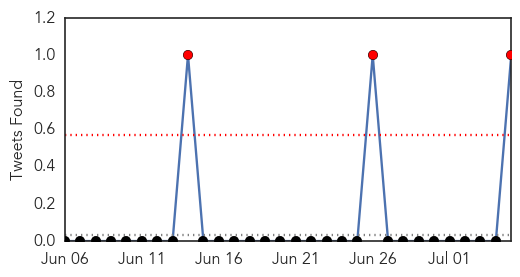
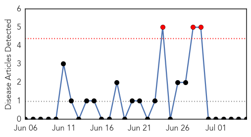

Dengue Fever
30-Day Web Trend
5 alerts, 7 warnings

30-Day Twitter Trend
3 alerts, 0 warnings

Article Locations

Article Confidences
Top Articles:
- 0.970
- Kalaazar, dengue alert in Biratnagar
- 0.842
- Cure for dengue?
- 0.762
- Upgradation of health centres to de-stress major govt hospitals
- 0.736
- Health department sets up rapid response teams to combat dengue in DK
- 0.733
- Dengue and other Vector Borne diseases need to clear misconception
- 0.505
- Nodal officers at each taluk to fight communicable diseases
- 0.503
- Muggy weather troubles people
Top Tweets:
- 0.851
- Flavivirus news: Dengue cases drop - Fiji Times: Dengue cases dropFiji TimesTHE number of dengu... http://t.co/SRdRLH5o6D pathogenposse
Pertussis
30-Day Web Trend
3 alerts, 0 warnings

30-Day Twitter Trend
0 alerts, 0 warnings

Article Locations

Article Confidences

Top Articles:
-
No articles found for Jul 05, 2015
Top Tweets:
-
No tweets found for Jul 05, 2015